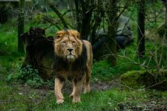
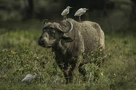
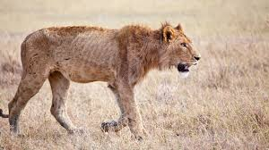
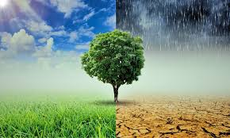
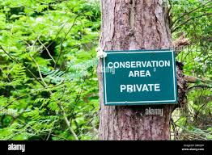
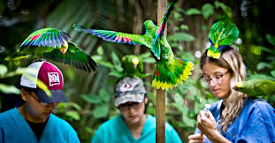

Safeguarding Wildlife
Importance of Wildlife
Wildlife is essential for maintaining the balance of ecosystems. Every species, from the smallest insect to the largest predator, plays a role in sustaining life on Earth. Healthy ecosystems provide clean air, fresh water, food, and medicine.
Wildlife also contributes to economic activities such as tourism and agriculture. Many communities depend on wildlife-related income, making conservation not only an environmental issue but also a social and economic necessity.

Biodiversity and Ecosystem Balance
Biodiversity refers to the variety of life forms on Earth. A rich biodiversity ensures that ecosystems are resilient and can recover from disasters such as floods, droughts, and diseases.
When one species disappears, it can affect many others. For example, removing predators can lead to overpopulation of certain animals, which can damage vegetation and disrupt the entire ecosystem.

Major Threats to Wildlife
Wildlife is under constant threat due to human activities. Deforestation destroys natural habitats, forcing animals to relocate or face extinction. Urban development also reduces the space available for wildlife.
Illegal hunting and poaching have led to the decline of many species such as elephants, rhinos, and tigers. Pollution from plastics and chemicals also harms marine and land animals.

Impact of Climate Change
Climate change is one of the biggest threats to wildlife. Rising temperatures, melting ice caps, and changing weather patterns disrupt animal habitats and migration patterns.
Many species cannot adapt quickly enough to these changes, leading to population decline. For example, polar animals are losing their habitats due to melting ice.

Wildlife Protection Methods
Conservation efforts aim to protect wildlife and their habitats. National parks and wildlife reserves provide safe environments where animals can live and reproduce without human interference.
Conservation programs also focus on breeding endangered species and reintroducing them into the wild. Education and awareness campaigns help people understand the importance of protecting wildlife.

Laws and Conservation Efforts
Governments around the world have introduced laws to protect wildlife. These laws regulate hunting, prevent illegal trade, and protect endangered species.
International agreements also play a key role in conservation. Organizations work together to ensure that wildlife is protected across borders.

How You Can Help
Individuals can make a big difference in protecting wildlife. Reducing plastic usage, conserving water, and supporting sustainable products help protect natural habitats.
You can also support wildlife organizations, participate in conservation programs, and spread awareness through social media and education.
Every small action contributes to a larger impact in preserving wildlife for future generations.
